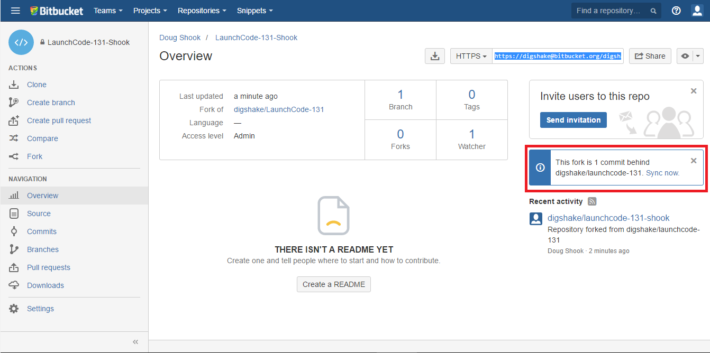

Prep 4: Module 4
- Before you begin
- Module Overview
- Module Introduction
- A brief history of I/O
- Using Segdewick’s text API
- Exercise: Statistics for a list of numbers
- Using Segdewick’s graphics API
- Exercise: Example using graphics
- Exercise: Mouse and Keyboard
- Achieving animation
- Exercise: Example of animation
- Introduction to sound and music
- Exercise: Frequency of a pitch
- Exercise: Ratio of multiple pitches
- More about sound
- Conclusion
Before you begin
Before you can begin on the exercises, studio, and assignment for this module, you must update your project to recieve the code. To do this, do the following:
-
Go to the BitBucket website. Find the page for your repository. On the right side you should see a message indicating that your repository is behind. Click sync now.
If you do not see this message, then you did not fork your repository correctly. Go back to the prep work for module 0, and create a new fork for your repository.

-
Open Eclipse, find your project. Right click the name of your project and go to
Team -> Pull.
-
On the window that pops up, enter your BitBucket password and click OK. You should now have the materials you need for module 4.

You will need to do this at the beginning of each module as we add more materials to the course.
Module Overview
Module Introduction
A brief history of I/O
Using Segdewick’s text API
Exercise: Statistics for a list of numbers
Part 1: Introduction
Part 2: The exercise
-
Find and open the
StatsJava program in theexercises4package of theexercisessource folder. -
Write code as directed to compute the specified statistics for the numbers that you read in.
Part 3: The solution
Using Segdewick’s graphics API
Exercise: Example using graphics
Part 1: Introduction
Part 2: The exercise
-
Find and open the
GraphicsDemoJava program in theexercises4package of theexercisessource folder. -
For each of the following, write code to generate the graphics as specified, and run your program after each addition to see that you are creating the right kinds of shapes, colors, and sizes.
- Draw a blue point anywhere you like
- Draw a larger green point someplace else
- Draw an unfilled red triangle somewhere
- Draw a filled yellow circle somewhere
- Draw a filled blue rectangle somewhere
The book does not include mention of Sedgewick’s
filledRectanglemethod. But it is there, and you can find it by pausing after typing the.. Eclipse will then show you possible completions, which will includefilledRectangle.
Part 3: Solution
Exercise: Mouse and Keyboard
Part 1: Introduction
Part 2: The exercise
-
Find and open the
WaitPointJava program in theexercises4package of theexercisessource folder. -
Write code that does the following:
- Waits until the mouse has been pressed
- Waits until the mouse has been released
- Draws a visible point at the spot where the mouse was released
- Waits until the user has typed a
q(all other keys are ignored) - Writes text on the graphic screen that says goodbye
Do this a step at a time, testing your code. Look at the solution video intermittently, as necessary.
Part 3: Solution
Achieving animation
Exercise: Example of animation
Part 1: Introduction
Part 2: The Exercise
-
Find and open the
MouseFollowerJava program in theexercises4package of theexercisessource folder. -
That code already contains the standard animation loop:
StdDraw.clear()at the beginning, to wipe the graphics display clean- Your code will then paint one frame of the animation
StdDraw.show(10)produces what you have drawn on the screen and waits 10 milliseconds before continuing.
By using
show(..), the drawing you do is not actually shown between calls toshow. Instead, the drawing is done in memory, off the screen, which is much faster.When you call
show(), the work you have done off screen is put on screen all at once.The program also pauses for the specified time, usually 10 to 50 milliseconds. Pausing allows your computer to do something else for a while, which will make your computer feel more responsive in the other applications that are running.
-
First try to get a ball on the screen to follow your mouse. This consists of reading the mouse’s coordinates, and painting a ball at that spot.
-
When you have that working, try to think of how you could make the ball appear to lag in its mouse-following activities.
As a hint, think about keeping some history of where the mouse has been. You can then have the ball go to locations in the mouse’s past.
Part 3: The Solution
Introduction to sound and music
Exercise: Frequency of a pitch
Part 1: Introduction
Part 2: The exercise
-
Find and open the
PitchesJava program in theexercises4package of theexercisessource folder. -
Insert code to prompt the user to enter an integer representing a pitch.
-
Compute the frequency that corresponds to that pitch.
-
Print the frequency of that pitch, the frequency of a pitch 7 chromatic steps higher, and the ratio of the two frequencies.
Part 3: The Solution
Exercise: Ratio of multiple pitches
Part 1: Introduction
Part 2: The exercise
-
Continue modifying the
PitchesJava program in theexercises4package of theexercisessource folder. -
Prompt the user to enter an integer for pitch 1.
-
Prompt the user to enter an integer for pitch 2.
-
Compute the frequency that corresponds to those pitches
-
Print the frequency of both pitches and the ratio of the two frequencies.